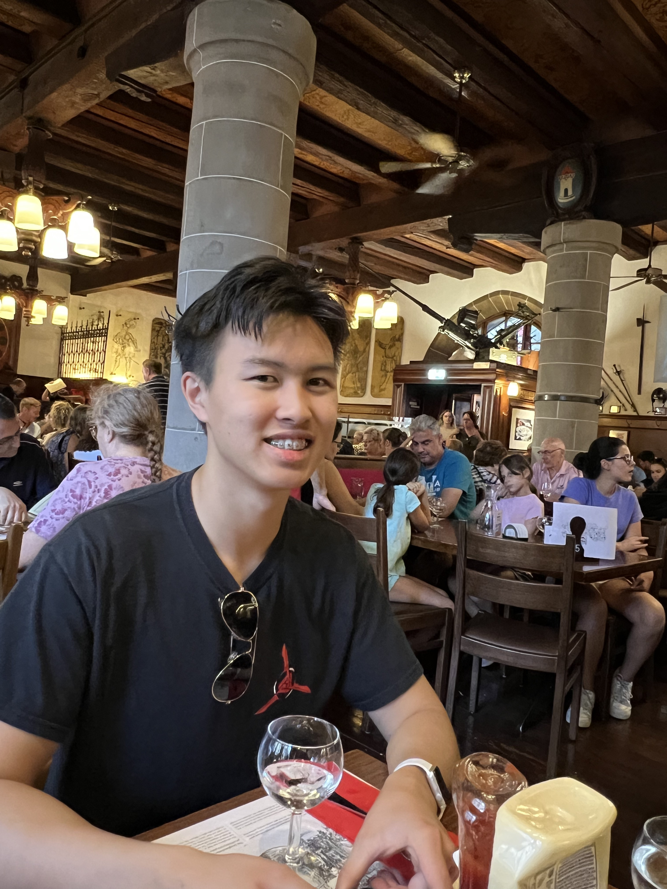

My Zurich Experience
~ By Michael Ye
My Day in Zurich
To kick off our European trip, we visited the charming city of Zurich. Having booked our hotel in the industrial zone of the city, we did not venture beyond their local supermarket (Coop). We set out to the old town the next day, taking in views such as the St. Peter, Fraumunster, and Grossmunster Churches, the Quaibrucke and Munsterbrucke bridges, the Lindenhof, and the medieval streets. Later, we strolled along the picturesque waterfront and embarked on a river cruise, taking us past notable lakeside landmarks like Tina Turner’s mansion and the Lindt chocolate factory.
Zeughauskeller
After a fulfilling day of exploring the city, we stumbled upon the Zeughauskeller, just beyond the Munsterhof town square. While the exterior of the restaurant was modest, the interior was a different story. Once an armory, Zeughauskeller proudly displays its military heritage, featuring everything from knight’s armor to 20th-century artillery pieces mounted on the walls. The food was decent, albeit a bit on the pricey side.
